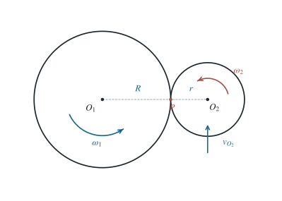

P0045 · 出版物习题 · 原书第 1.10 题
两圆盘外切无滑动滚动的绕行周期
在切点施加无相对滑动条件，求小圆盘绕大圆盘运动一周所需时间。
1 题目
1.1 物理情境
半径为 的圆盘 绕固定中心 匀速转动。半径为 的另一圆盘 与 外切，其圆心 始终与 相距 。
1.2 物理过程
沿 的边缘作无滑动滚动，同时绕自身中心转动。以图示逆时针方向为正， 的自转角速度分别为 。
1.3 已知参数和理想化假设
均恒定，两盘不变形，接触点的切向速度相等。两盘处于同一平面，盘心的轨道为半径 的圆。
1.4 求解目标
求圆盘 的圆心 绕 运动一整周所需时间。

图中两圆精确外切于 ；盘心 的轨道半径是 。
2 思路与提示
分别在静止圆盘和运动圆盘的接触点施加无滑动约束；注意公转与自转是两种角速度。
3 解答展开 / 收起
3.1 给盘心公转速度设一个独立变量
设 绕 的瞬时角速度为 ，方向也取逆时针为正。两个盘心连线转动时，盘心的切向速度为
此时切点 位于 的右侧、 的左侧。由 的自转产生的切点速度向上，其大小为 。 的切点速度等于盘心平移速度减去自转在左侧切点产生的向下速度，其有符号大小为 。
3.2 在接触点写无滑动条件
两接触表面的瞬时切向速度必须相同，因此
联立第（1）、（2）式，分别得到盘心的线速度和公转角速度：
既不等于 ，通常也不等于 ；它由两盘的切点速度共同确定。
3.3 由公转角速度求周期
恒定，故第（3）式的 也恒定。盘心走完一周的角位移为 ，从而
量纲检验：分子为长度，分母为长度除以时间，因此结果确为时间。若 ，则 ，得到 ；两盘共同转过相同角度时的这一极限也与结果一致。
4 方法与讨论
纯滚动意味着切点处两接触面的速度相等，而不是两个圆盘的角速度相等。移动圆盘上任一点的速度是盘心平移速度和绕盘心自转速度的矢量和；外切点恰在两个盘心之间，因而自转贡献的符号必须按其具体位置判断。
若允许角速度取任意正负值，第（3）式仍给出有符号公转角速度；只要 ，绕行时间应写为 。当该和为零时盘心不绕行，因而不存在有限的绕行周期。